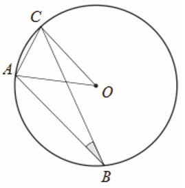

Matura 2017 czerwiec
Strona jest w trakcie przygotowywania.
Liczba \(|9-2|-|4-7|\) jest równa
A.\( 4 \)
B.\( 10 \)
C.\( -10 \)
D.\( -4 \)
A
Iloczyn dodatnich liczb \(a\) i \(b\) jest równy \(1350\). Ponadto \(15\%\) liczby
\(a\) jest równe \(10\%\) liczby \(b\). Stąd wynika, że \(b\) jest równe
A.\( 9 \)
B.\( 18 \)
C.\( 45 \)
D.\( 50 \)
C
Suma \(16^{24}+16^{24}+16^{24}+16^{24}\) jest równa
A.\( 4^{24} \)
B.\( 4^{25} \)
C.\( 4^{48} \)
D.\( 4^{49} \)
D
Liczba \(\log_327-\log_31\) jest równa
A.\( 0 \)
B.\( 1 \)
C.\( 2 \)
D.\( 3 \)
D
Dla każdej liczby rzeczywistej \(x\) wyrażenie \(x^6-2x^3-3\) jest równe
A.\( (x^3+1)(x^2-3) \)
B.\( (x^3-3)(x^3+1) \)
C.\( (x^2+3)(x^4-1) \)
D.\( (x^4+1)(x^2-3) \)
B
Wartość wyrażenia \((b-a)^2\) dla \(a=2\sqrt{3}\) i \(b=\sqrt{75}\) jest równa
A.\( 9 \)
B.\( 27 \)
C.\( 63 \)
D.\( 147 \)
B
Funkcja liniowa \(f\) jest określona wzorem \(f(x)=21-\frac{7}{3}x\). Miejscem
zerowym funkcji \(f\) jest
A.\( -9 \)
B.\( -\frac{7}{3} \)
C.\( 9 \)
D.\( 21 \)
C
Rozwiązaniem układu równań \(\begin{cases} x+y=1 \\ x-y=b \end{cases} \) z
niewiadomymi \(x\) i \(y\) jest para liczb dodatnich. Wynika stąd, że
A.\( b\lt -1 \)
B.\( b=-1 \)
C.\( -1\lt b\lt 1 \)
D.\( b\ge 1 \)
C
Funkcja kwadratowa \(f\) jest określona wzorem \(f(x)=x^2+bx+c\) oraz
\(f(-1)=f(3)=1\). Współczynnik \(b\) jest równy
A.\( -2 \)
B.\( -1 \)
C.\( 0 \)
D.\( 3 \)
A
Równanie \(x(x-3)(x^2+25)=0\) ma dokładnie
A.cztery rozwiązania: \( x=0, x=3, x=5, x=-5 \)
B.trzy rozwiązania: \( x=3, x=5, x=-5 \)
C.dwa rozwiązania: \( x=0, x=3 \)
D.jedno rozwiązanie: \( x=3 \)
C
Funkcja kwadratowa \(f\) jest określona wzorem \(f(x)=(x-3)(7-x)\). Wierzchołek
paraboli będącej wykresem funkcji \(f\) należy do prostej o równaniu
A.\( y=-5 \)
B.\( y=5 \)
C.\( y=-4 \)
D.\( y=4 \)
D
Punkt \(A=(2017,0)\) należy do wykresu funkcji \(f\) określonej wzorem
A.\( f(x)=(x+2017)^2 \)
B.\( f(x)=x^2-2017 \)
C.\( f(x)=(x+2017)(x-2017) \)
D.\( f(x)=x^2+2017 \)
C
W ciągu arytmetycznym \((a_n)\), określonym dla \(n\ge1\), spełniony jest warunek
\(2a_3=a_2+a_1+1\). Różnica \(r\) tego ciągu jest równa
A.\( 0 \)
B.\( \frac{1}{3} \)
C.\( \frac{1}{2} \)
D.\( 1 \)
B
Dany jest ciąg geometryczny \((x,2x^2,4x^3,8)\) o wyrazach nieujemnych. Wtedy
A.\( x=0 \)
B.\( x=1 \)
C.\( x=2 \)
D.\( x=4 \)
B
Kąt \(\alpha \) jest ostry i \(\operatorname{tg} \alpha =\frac{12}{5}\). Wówczas
\(\sin \alpha \) jest równy
A.\( \frac{5}{17} \)
B.\( \frac{12}{17} \)
C.\( \frac{5}{13} \)
D.\( \frac{12}{13} \)
D
W okręgu o środku \(O\) dany jest kąt wpisany \(ABC\) o mierze \(20^\circ \) (patrz
rysunek).  Miara kąta \(CAO\)
jest równa
A.\( 85^\circ \)
B.\( 70^\circ \)
C.\( 80^\circ \)
D.\( 75^\circ \)
B
Odcinek \(BD\) jest zawarty w dwusiecznej kąta ostrego \(ABC\) trójkąta
prostokątnego, w którym przyprostokątne \(AC\) i \(BC\) mają długości odpowiednio \(5\) i \(3\).
Wówczas miara \(\varphi\) kąta
\(DBC\) spełnia warunek
A.\( 20^\circ \lt \varphi\lt 25^\circ \)
B.\( 25^\circ \lt \varphi\lt 30^\circ \)
C.\( 30^\circ \lt \varphi\lt 35^\circ \)
D.\( 35^\circ \lt \varphi\lt 40^\circ \)
B
Prosta przechodząca przez punkt \(A=(-10,5)\) i początek układu współrzędnych jest
prostopadła do prostej o równaniu
A.\( y=-2x+4 \)
B.\( y=\frac{1}{2}x \)
C.\( y=-\frac{1}{2}x+1 \)
D.\( y=2x-4 \)
D
Punkty \(A=(-21,11)\) i \(B=(3,17)\) są końcami odcinka \(AB\). Obrazem tego
odcinka w symetrii względem osi \(Ox\) układu współrzędnych jest odcinek \(A'B'\). Środkiem odcinka
\(A'B'\) jest punkt o współrzędnych
A.\( (-9,-14) \)
B.\( (-9,14) \)
C.\( (9,-14) \)
D.\( (9,14) \)
A
Trójkąt \(ABC\) jest podobny do trójkąta \(A'B'C'\) w skali \(\frac{5}{2}\), przy
czym \(|AB|=\frac{5}{2}|A'B'|\). Stosunek pola trójkąta \(ABC\) do pola trójkąta \(A'B'C'\) jest
równy
A.\( \frac{4}{25} \)
B.\( \frac{2}{5} \)
C.\( \frac{5}{2} \)
D.\( \frac{25}{4} \)
D
Pole koła opisanego na trójkącie równobocznym jest równe \(\frac{1}{3}\pi ^3\).
Długość boku tego trójkąta jest równa
A.\( \frac{\pi}{3} \)
B.\( \pi \)
C.\( \sqrt{3}\pi \)
D.\( 3\pi \)
B
Pole trójkąta prostokątnego \(ABC\), przedstawionego na rysunku, jest równe
A.\( \frac{32\sqrt{3}}{6} \)
B.\( \frac{16\sqrt{3}}{6} \)
C.\( \frac{8\sqrt{3}}{3} \)
D.\( \frac{4\sqrt{3}}{3} \)
C
Długość przekątnej sześcianu jest równa \(6\). Stąd wynika, że pole powierzchni
całkowitej tego sześcianu jest równe
A.\( 72 \)
B.\( 48 \)
C.\( 152 \)
D.\( 108 \)
A
Pole powierzchni bocznej walca jest równe \(16\pi\), a promień jego podstawy ma
długość \(2\). Wysokość tego walca jest równa
A.\( 4 \)
B.\( 8 \)
C.\( 4\pi \)
D.\( 8\pi \)
A
Rzucamy dwa razy symetryczną sześcienną kostką do gry. Prawdopodobieństwo
otrzymania pary liczb, których iloczyn jest większy od \(20\), jest równe
A.\( \frac{1}{6} \)
B.\( \frac{5}{36} \)
C.\( \frac{1}{9} \)
D.\( \frac{2}{9} \)
A
Rozwiąż nierówność \((x-\frac{1}{2})x\gt 3(x-\frac{1}{2})(x+\frac{1}{3})\).
\(x\in \left ( -\frac{1}{2}, \frac{1}{2} \right )\)
Kąt \(\alpha \) jest ostry i spełniona jest równość \(\sin \alpha +\cos \alpha
=\frac{\sqrt{7}}{2}\). Oblicz wartość wyrażenia \((\sin \alpha -\cos \alpha )^2\).
\(\frac{1}{4}\)
Dwusieczna kąta ostrego \(ABC\) przecina przyprostokątną \(AC\) trójkąta
prostokątnego \(ABC\) w punkcie \(D\). Udowodnij, że jeżeli \(|AD|=|BD|\), to \(|CD|=\frac{1}{2}\cdot |BD|\).
Wykaż, że prawdziwa jest nierówność \[(1{,}5)^{100}\lt 6^{25}\]
Suma trzydziestu początkowych wyrazów ciągu arytmetycznego \((a_n)\), określonego
dla \(n\ge 1\), jest równa \(30\). Ponadto \(a_{30}=30\). Oblicz różnicę tego ciągu.
\(r=2\)
Ze zbioru liczb \(1,2,3,4,5,6,7,8,9,10,11,12,13,14,15\) losujemy bez zwracania dwa
razy po jednej liczbie. Wylosowane liczby tworzą parę \((a,b)\), gdzie \(a\) jest wynikiem
pierwszego losowania, \(b\) jest wynikiem drugiego losowania. Oblicz, ile jest wszystkich par
\((a,b)\) takich, że iloczyn \(a\cdot b\) jest liczbą parzystą.
\(154\)
Ramię trapezu równoramiennego \(ABCD\) ma długość \(\sqrt{26}\). Przekątne w tym
trapezie są prostopadłe, a punkt ich przecięcia dzieli je w stosunku \(2:3\). Oblicz pole tego
trapezu.
\(25\)
Punkty \(A=(-2,-8)\) i \(B=(14,-8)\) są wierzchołkami trójkąta równoramiennego
\(ABC\), w którym \(|AB|=|AC|\). Wysokość \(AD\) tego trójkąta jest zawarta w prostej o równaniu
\(y=\frac{1}{2}x-7\). Oblicz współrzędne wierzchołka \(C\) tego trójkąta.
\(C=\left (\frac{38}{5},\frac{24}{5}\right )\)
Podstawą graniastosłupa prostego \(ABCDA'B'C'D'\) jest romb \(ABCD\). Przekątna
\(AC'\) tego graniastosłupa ma długość \(8\) i jest nachylona do płaszczyzny podstawy pod kątem
\(30^\circ \), a przekątna \(BD'\) jest nachylona do tej płaszczyzny pod kątem \(45^\circ \). Oblicz
pole powierzchni całkowitej tego graniastosłupa. 
\(16(\sqrt{3}+4)\)